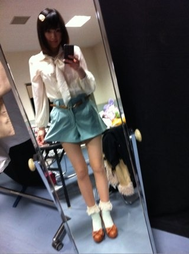
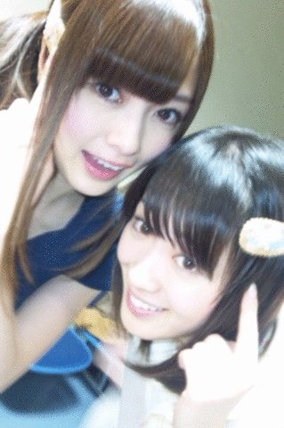

2012/0324Sat（´-`）.｡oO(かずみん×46
皆様こんばんは。
いつも応援ありがとうございます！
さて今回は記念すべき
（´-`）.｡oO(かずみん×46!
前回も沢山のコメント、
ありがとうございました！
これからも皆様の期待にこたえられるよう、
頑張りますので、応援のほど
よろしくお願い致します！
----------------------
今日は初の個別握手会in名古屋でした！
個別握手はみなさんとより濃い話を
することができて楽しかったです！
名古屋は3度目だったのですが、
いつも人のあたたかさには
感動させられます。
来てくださったみなさん、
ありがとうございました！
関東から遠征してくださった方も
沢山いらっしゃって嬉しかったです！
次は31日東京個別\(//∇//)\
私も楽しみに待ってますので、
みなさんも楽しみにしててくださいね！
今日の握手会で着た私服はこちら♪

トップスもズボンもアベイルで1800円！
お得やろ〜？笑
大好きな水色で揃えてみました( ´ ▽ ` )ﾉ
東京は高いワンピを
着てみようかと思います！笑
そういえば、
偶然まいやんと髪飾りが一緒だったの！

びっくりしたなぁ(#^.^#)
本当に楽しかったです！
ありがとうございました！
----------------------
また明日からもお仕事頑張ります(*^^*)
みんなにパワーもらったから
私ももっと頑張らなくては！
みなさんも勉強やお仕事、
頑張ってください(>_<)
それではくれぐれも
身体にはお気をつけて...
おやすみなさい(( _ _ ))..zzzZZ
2012/03/24 23:24
コメント(246)
初コメ！
今回の私服最高です♪( ´▽｀)
今回の私服最高です♪( ´▽｀)
今日まいやんもかずみんも
握手行ったのに
髪飾り気付かんかった
私って素敵やん←
ありがとうね!!
兵庫から３時起き
辛かったけど
それ以上に楽しかった!
初かずみん可愛すぎて
照れたやないかーい!
また全握で(=゜ω゜)ノ
こんばんは(^^)/
記念すべき46回目が初の個別握手会の記事なんて素敵だね♪
名古屋楽しかったみたいで良かったね(*^^*)
行けなかったのが残念…
東京で会えるの楽しみにしてるから!!
私服可愛すぎるやろ～！
プチプラってやつかな？笑
高いワンピも楽しみにしてる(*´∀｀*)
ではでは
今日は1日お疲れさま！
おやすみ～
記念すべき46回目が初の個別握手会の記事なんて素敵だね♪
名古屋楽しかったみたいで良かったね(*^^*)
行けなかったのが残念…
東京で会えるの楽しみにしてるから!!
私服可愛すぎるやろ～！
プチプラってやつかな？笑
高いワンピも楽しみにしてる(*´∀｀*)
ではでは
今日は1日お疲れさま！
おやすみ～
超絶
カワイイーーーーーーー！！！！！
カワイイーーーーーーー！！！！！
かずみさん!!
更新待ってましたq(^-^q)
俺もかずみさんに会いたいなぁ
絶対会いに行くね!!
私服めっちゃかわいい!
ずっとかずみさんを応援してるよ！
体調に気をつけてがんばって!!
更新待ってましたq(^-^q)
俺もかずみさんに会いたいなぁ
絶対会いに行くね!!
私服めっちゃかわいい!
ずっとかずみさんを応援してるよ！
体調に気をつけてがんばって!!
握手会お疲れ様♪
私服ちょう可愛いー(*^_^*)
早く31日にならないかなぁ
いろんな話したい♪
明日仕事頑張ってね(@^▽^@)
かずみんも身体気をつけてね(*^_^*)
私服ちょう可愛いー(*^_^*)
早く31日にならないかなぁ
いろんな話したい♪
明日仕事頑張ってね(@^▽^@)
かずみんも身体気をつけてね(*^_^*)
握手会お疲れさま(*^^*)！
東京の個別には行くからね(*゜ロ゜)！
かずみんと久々にお話しできるの
楽しみにしてまーす(･v･)♥
個別おつかれさま！
行けなくてすごく残念><
その分会えるのを楽しみにしてるよ！！
相変わらず安くてかわいいなぁおいw
高いワンピースとか期待する！
けど無理しなくても安くておしゃれなかずみんファッションでいい気がする！
来週は水色着て同じ色ワンチャン！←
明日もがんばってね！
ずっと応援してるよ～
行けなくてすごく残念><
その分会えるのを楽しみにしてるよ！！
相変わらず安くてかわいいなぁおいw
高いワンピースとか期待する！
けど無理しなくても安くておしゃれなかずみんファッションでいい気がする！
来週は水色着て同じ色ワンチャン！←
明日もがんばってね！
ずっと応援してるよ～
かずみん、こんばんは＼(^o^)／
個別握手会お疲れ様！
名古屋には行けなかったけど、３１日の個別握手会は必ず行くからね！
かずみんのワンピ楽しみだな～
今回の私服は、凄く春らしくて可愛いと思うよ！
とてもアベイルで1800円だったとは思えないよ～
髪飾りもいい感じで可愛い
俺もかずみんからいっぱいパワーをもらっているよ
俺も握手会まで頑張んなきゃ
かずみんも身体に気をつけてお仕事頑張ってね！
個別握手会お疲れ様！
名古屋には行けなかったけど、３１日の個別握手会は必ず行くからね！
かずみんのワンピ楽しみだな～
今回の私服は、凄く春らしくて可愛いと思うよ！
とてもアベイルで1800円だったとは思えないよ～
髪飾りもいい感じで可愛い
俺もかずみんからいっぱいパワーをもらっているよ
俺も握手会まで頑張んなきゃ
かずみんも身体に気をつけてお仕事頑張ってね！
更新待ってましたー＼(^o^)／
個別かぁ(￣▽￣)
他のファンに先を越されてしまった（；＿；）笑
俺は2ndまで行けませんヽ(；▽；)ノ
私服めっちゃ好みやわ（^人^）
いっつもあんな服装よろしく(*^o^*)
仕事忙しいやろうけど頑張ってなぁ（^人^）
応援頑張るから＼(^o^)／
byりーまん
個別かぁ(￣▽￣)
他のファンに先を越されてしまった（；＿；）笑
俺は2ndまで行けませんヽ(；▽；)ノ
私服めっちゃ好みやわ（^人^）
いっつもあんな服装よろしく(*^o^*)
仕事忙しいやろうけど頑張ってなぁ（^人^）
応援頑張るから＼(^o^)／
byりーまん
お疲れ様＼(^o^)／
私服すごく似合ってるよo(^▽^)o
安くて可愛い服はイイよね( ´ ▽ ` )ﾉ
個別は行けないけどいつか時間作って行くから待っててね☆〜（ゝ。∂）
これからも体調に気をつけて頑張ってね(=´∀｀)人(´∀｀=)
私服すごく似合ってるよo(^▽^)o
安くて可愛い服はイイよね( ´ ▽ ` )ﾉ
個別は行けないけどいつか時間作って行くから待っててね☆〜（ゝ。∂）
これからも体調に気をつけて頑張ってね(=´∀｀)人(´∀｀=)
かずみん、お疲れ様ー♪
いや、ほんとお疲れ様！一日中立ちっぱなしで疲れたよね！ありがとね！夜行バスからの終日立ちだと脚パンパンだよね…(・ω・｀)
今日はいっぱい話せて嬉しかったし楽しかったよー(^^)
ずーっとかずみんレーンだけぐるぐるしてたからすっかり顔なじみな感じになっちゃったね(*´艸`)
私服も可愛かったよー(ノωヾ)
最近は2nd絡みの仕事で毎日忙しそうだけど、体調崩さない程度に時間見付けてしっかり休んでね！
やっぱりかずみんには元気で笑顔で居てほしいし☆彡
あ、（´-`）.。oO(かずみん×46おめでとう(*^▽^)/
また会う機会もあると思うからその時もヨロシクねー(゜▽゜)/
高いワンピ楽しみにしてます(笑
リュウたん♪
いや、ほんとお疲れ様！一日中立ちっぱなしで疲れたよね！ありがとね！夜行バスからの終日立ちだと脚パンパンだよね…(・ω・｀)
今日はいっぱい話せて嬉しかったし楽しかったよー(^^)
ずーっとかずみんレーンだけぐるぐるしてたからすっかり顔なじみな感じになっちゃったね(*´艸`)
私服も可愛かったよー(ノωヾ)
最近は2nd絡みの仕事で毎日忙しそうだけど、体調崩さない程度に時間見付けてしっかり休んでね！
やっぱりかずみんには元気で笑顔で居てほしいし☆彡
あ、（´-`）.。oO(かずみん×46おめでとう(*^▽^)/
また会う機会もあると思うからその時もヨロシクねー(゜▽゜)/
高いワンピ楽しみにしてます(笑
リュウたん♪
一実さん今日も１日お疲れさま♪
一実さんと会うの２回目やったけどめっちゃ楽しみにしてたんやで!!
来週の東京は行けやんけど(T^T)
最後にやっと覚えてくれたけど誰かわかるかな？
また名古屋の全握行くな(^∇^)
今日は１日めっちゃ楽しかったしいっぱい元気と笑顔もらいました!!
明日から僕もがんばるo(｀^´*)
一実さんも体調には気をつけてな！
おやすみ♪
一実さんと会うの２回目やったけどめっちゃ楽しみにしてたんやで!!
来週の東京は行けやんけど(T^T)
最後にやっと覚えてくれたけど誰かわかるかな？
また名古屋の全握行くな(^∇^)
今日は１日めっちゃ楽しかったしいっぱい元気と笑顔もらいました!!
明日から僕もがんばるo(｀^´*)
一実さんも体調には気をつけてな！
おやすみ♪
かずみん!!個別握手会in名古屋!!お疲れ様でした!!
自分は，初の生かずみんだったので、メッチャ、ドキドキ&ezF479;でした!!
かずみん、背が高いのにビックリしました！
私服も！メッチャ可愛かった!!
癒されました!!
自分は，初の生かずみんだったので、メッチャ、ドキドキ&ezF479;でした!!
かずみん、背が高いのにビックリしました！
私服も！メッチャ可愛かった!!
癒されました!!
かずみんばんわ(*^o^*)
記念すべき46回目のブログ更新
最近更新ないから心配してたよ…
でも元気そうで安心した！
握手会お疲れ様！
楽しめたみたいで良かったよ＼(^o^)／
私服も可愛いね！
安くてオシャレだし…
ヤスオシャ？オシャヤス？
安くてオシャレの名前良いのないかな？
分かった！オシャスだなww
ぜひ使ってください(￣▽￣)
でわでわこの辺でおやすみ(( _ _ ))..zzzZZ
楽しかったみたいで良いなぁ～
そんな楽しい中
千葉で自宅待機でしたw
千葉は平和だったよw
私服もいいねぇ
31日の個別が楽しみだ～
ポニーテールが好きです
↑
何かのアピールwww
そんな楽しい中
千葉で自宅待機でしたw
千葉は平和だったよw
私服もいいねぇ
31日の個別が楽しみだ～
ポニーテールが好きです
↑
何かのアピールwww
うわー
まいやんかわいいなあ(・∀・)
まいやん推そーwwww
ウソぴょん←
推しはかずみんとひなぴょん(。・ω・。)
絶対ぶれないよー☆
握手会楽しかったあ!!
もっとゆっくり話したかったけどなあ……
東京は行けへんど大阪行くからねーヽ(^^)
楽しみすぎるわあ!!!!
あっ。
肘擦られて高まったぁぁぁぁぁぁぁぁぁｗｗ
そして肘擦れて高まったぁぁぁぁぁぁぁぁぁｗ
またなあ(・∀・)
まいやんかわいいなあ(・∀・)
まいやん推そーwwww
ウソぴょん←
推しはかずみんとひなぴょん(。・ω・。)
絶対ぶれないよー☆
握手会楽しかったあ!!
もっとゆっくり話したかったけどなあ……
東京は行けへんど大阪行くからねーヽ(^^)
楽しみすぎるわあ!!!!
あっ。
肘擦られて高まったぁぁぁぁぁぁぁぁぁｗｗ
そして肘擦れて高まったぁぁぁぁぁぁぁぁぁｗ
またなあ(・∀・)
かずみん♪
こんばんはヾ(=^▽^=)ノ
個別握手会お疲れ様でした。
またね(*・ｘ・)ノ~~~♪
こんばんはヾ(=^▽^=)ノ
個別握手会お疲れ様でした。
またね(*・ｘ・)ノ~~~♪
名古屋個別お疲れ様でした( ´∀`)
乃木坂仕様にしたナイキのトップスを着てたさのぞうです！( *｀ω´)
最後には覚えてもらえて良かったす！
今回は全然話し足りなかったので、その分は来週の東京個別で話したいと思ってます。
甘党トークをしましょう( ´∀`)
ではまた。
※私服楽しみにしてます！
乃木坂仕様にしたナイキのトップスを着てたさのぞうです！( *｀ω´)
最後には覚えてもらえて良かったす！
今回は全然話し足りなかったので、その分は来週の東京個別で話したいと思ってます。
甘党トークをしましょう( ´∀`)
ではまた。
※私服楽しみにしてます！
名古屋行きたかったなぁ～
ひつまぶし、手羽先、味噌カツを食べに…
いや、握手会に決まっているでしょ←本日３回目カナ？(笑)
かずみんの私服をみたら、テンション高山ってきたけど
来週まで我慢するか！失いたくないからのPVを見ながら♪
そうそう今日、自販機のジュースが当たった＼(^o^)／
←全然関係ナイチンゲール(笑)
では、本日も笑顔で素敵な１日になりますように♪
かずみんブログ久しぶりだね(*^^*)
待ってたよ
てか、脚めっちゃきれい
さすがに名古屋は行けなかった(>___<)
ゆっくり休んでください(^o^)
それじゃあおやすみ
安くていい服のチョイス流石かずみんだわ！！
めちゃ足長くみえたっ( *｀ω´)
握手会すごい楽しかったよ(≧∇≦)
次は名古屋の全握かな(๑¯ᴗ¯๑)
楽しみ！！
おやすみ(-ω-)zzz
めちゃ足長くみえたっ( *｀ω´)
握手会すごい楽しかったよ(≧∇≦)
次は名古屋の全握かな(๑¯ᴗ¯๑)
楽しみ！！
おやすみ(-ω-)zzz
更新きたぁあああああああ♪.｡ﾟ+.(*･ω･*)ﾉ｡
しばらく更新ないから体調崩したのかと思って心配したよー（笑）
とりまブログ46回記念おめでとう！！
まぁ忙しいと思うからかずみんはかずみんペースでこれからもブログ更新してってね！ くれぐれも無理はせずに^^
そして!!
名古屋個別お疲れ様(ﾉ*･ω･)ﾉ
流石に遠征は無理やったわぁ(泣)
でも今またかずみん不足← やばい、早く補充してくださいw
かずみん満タンで＼(￣∀￣*)/(ハイオク満タン的なw)
とりま東京個別が楽しみすぎてっ♪♪
ワンピ期待してるよ
話すことたくさんあるんでしょー？笑 まぁ俺もあるけどw
でも俺は手紙とかでも伝えられるからかずみん優先にします（笑） レディーファースト的な
↑自重しますww
あ、そうだ！ 手紙送っといたよ！ この間渡せなかったやつ。
まぁ暇なときにでも読んでくださいな。
さぁ、明後日はシングルス！
頑張る、、テンション高山で頑張るw
それじゃあ
☆☆☆(なお・ω・やん)☆☆☆
しばらく更新ないから体調崩したのかと思って心配したよー（笑）
とりまブログ46回記念おめでとう！！
まぁ忙しいと思うからかずみんはかずみんペースでこれからもブログ更新してってね！ くれぐれも無理はせずに^^
そして!!
名古屋個別お疲れ様(ﾉ*･ω･)ﾉ
流石に遠征は無理やったわぁ(泣)
でも今またかずみん不足← やばい、早く補充してくださいw
かずみん満タンで＼(￣∀￣*)/(ハイオク満タン的なw)
とりま東京個別が楽しみすぎてっ♪♪
ワンピ期待してるよ
話すことたくさんあるんでしょー？笑 まぁ俺もあるけどw
でも俺は手紙とかでも伝えられるからかずみん優先にします（笑） レディーファースト的な
↑自重しますww
あ、そうだ！ 手紙送っといたよ！ この間渡せなかったやつ。
まぁ暇なときにでも読んでくださいな。
さぁ、明後日はシングルス！
頑張る、、テンション高山で頑張るw
それじゃあ
☆☆☆(なお・ω・やん)☆☆☆
かずみん今日は長時間お疲れ様！！
充実した初個別だったみたいだね。
私服、女の子らしくて良い♪
とても１８００円には見えないよ♪♪
よっ買い物上手！！
名古屋には行けなくて残念だったけど
東京まであと少し！！！
楽しみに待ってるよ。
俺も、かずみんに失礼のないように
３１日の為にバシッと洋服買ってきまーす。
マジで最近忙しいと思うけど、身体も心も
あまり無理せず頑張って下さい。
ドキドキしながら当日を待ってまーす。
BY 音楽店長
充実した初個別だったみたいだね。
私服、女の子らしくて良い♪
とても１８００円には見えないよ♪♪
よっ買い物上手！！
名古屋には行けなくて残念だったけど
東京まであと少し！！！
楽しみに待ってるよ。
俺も、かずみんに失礼のないように
３１日の為にバシッと洋服買ってきまーす。
マジで最近忙しいと思うけど、身体も心も
あまり無理せず頑張って下さい。
ドキドキしながら当日を待ってまーす。
BY 音楽店長
か～ずみん！
名古屋個別お疲れ様(>_<)
私服ちょー可愛い！
東京の時はどんなのかな？w
でも自分は行けなかったけど色々大変だったりした？
東京個別はお互い楽しもうね
名古屋個別お疲れ様(>_<)
私服ちょー可愛い！
東京の時はどんなのかな？w
でも自分は行けなかったけど色々大変だったりした？
東京個別はお互い楽しもうね
昨日はお疲れ様でした(´∀｀)∩
私服かずみん見たかったなぁ～～
髪飾り似合ってて可愛いよ♪♪
まいやんと被るとかすごい偶然やなΣ(´∀｀；)
ゆっくり体休めて今日からまた頑張りましょう(*´ω｀*)
それじゃ、おやすみ(´∀｀*)ﾉｼ
☆ハル☆
私服かずみん見たかったなぁ～～
髪飾り似合ってて可愛いよ♪♪
まいやんと被るとかすごい偶然やなΣ(´∀｀；)
ゆっくり体休めて今日からまた頑張りましょう(*´ω｀*)
それじゃ、おやすみ(´∀｀*)ﾉｼ
☆ハル☆
かずみん脚細っ!!!!
46回目おめでとう(^o^)／
てか名古屋行けなくてごめんm(__)m
31日は行くからなっ!!
46回目おめでとう(^o^)／
てか名古屋行けなくてごめんm(__)m
31日は行くからなっ!!
握手会での私服も楽しみの一つですね。今日の良いですね。大阪の時も期待しております。
こんばんは～
pekoだけどわかりますか？
今日６回位お邪魔させてもらいました
個人的に人生初個別だったから
最初の２回くらいめっちゃ緊張してたけど
だんだん慣れてきて、人見知りの俺にしては
よくしゃべれたと思うwww
まぁまだ全握が７日にすぐあるから
楽しみにしてるよ！
次は場所が若干遠いから
寝坊しないことが最初の目標
ではおやすみなさいzzz
PS.コメント、あたし一人でやってますからね！www
pekoだけどわかりますか？
今日６回位お邪魔させてもらいました
個人的に人生初個別だったから
最初の２回くらいめっちゃ緊張してたけど
だんだん慣れてきて、人見知りの俺にしては
よくしゃべれたと思うwww
まぁまだ全握が７日にすぐあるから
楽しみにしてるよ！
次は場所が若干遠いから
寝坊しないことが最初の目標
ではおやすみなさいzzz
PS.コメント、あたし一人でやってますからね！www
安い買い物でおしゃれするってとこが素敵だと思う
今回も脚がキレイで素敵です！
今回も脚がキレイで素敵です！
お疲れ(^^)
今日は少ししか行けなくてごめんね！
東京会えないとか凹んだ…
次はまた名古屋かな？
楽しみにしてるね！
身体に気をつけてね！
お疲れ様ー！
今日は少ししか行けなくてごめんね！
東京会えないとか凹んだ…
次はまた名古屋かな？
楽しみにしてるね！
身体に気をつけてね！
お疲れ様ー！
一実さん、こんばんは！！
名古屋での握手会お疲れさまでした！
今日の私服、可愛いですね
何かOLさんみたいと思うのは僕だけでしょうか？
お似合いです
これからも一実さん、応援していきますので頑張ってください
来週東京での握手会楽しみです
ではまた
名古屋での握手会お疲れさまでした！
今日の私服、可愛いですね
何かOLさんみたいと思うのは僕だけでしょうか？
お似合いです
これからも一実さん、応援していきますので頑張ってください
来週東京での握手会楽しみです
ではまた
師匠、おつかれさまでした。
制服のときは気づかなかったのですが、師匠、なまら足ほっそ！
個握行けませんが、いつか教えを乞うためにお会いしたいです。
制服のときは気づかなかったのですが、師匠、なまら足ほっそ！
個握行けませんが、いつか教えを乞うためにお会いしたいです。
握手会おつかれさまー。
私服かわいいね＆安いね（笑）
おれは東京の個握で待ってるので。
今ゆーきゃんの「サイダー」聴きながらコメしてる。
私服かわいいね＆安いね（笑）
おれは東京の個握で待ってるので。
今ゆーきゃんの「サイダー」聴きながらコメしてる。
46記事目
おめでとー(≧∀≦)
握手会お疲れ様。
かずみん
やっぱりオシャレだね！
かずみんの私服
もろタイプだわ＊
大阪個別は
どんな服で来てくれるのかな？
楽しみに待ってるね♪
でここすり
覚えておいてよ～(笑)
こ、このスタイルは、、、昭和の魔法少女ナントカちゃんみたいだww
・・・・・失礼、いい意味で・・・(これぜひ生で見たい。認識改めさせられそう)
今頃ですが、連続選抜入りおめでとうございました。。。
・・・・・失礼、いい意味で・・・(これぜひ生で見たい。認識改めさせられそう)
今頃ですが、連続選抜入りおめでとうございました。。。
更新ありがとう＼(^o^)／
iPhoneから書きます。
握手楽しかった。
あれだけ話してもまだ足らないな
もっと色々な話したかった(´Д` )
新幹線ですぐ帰るって聞いてたから、やっぱりすごく忙しいんだね。明日のお仕事も頑張ってね。いつもこうやってブログ書いてくれてとても嬉しいですよ。
あ、そういえば、(´Д` )
服にあまり触れてないな
物理的には触れたんだが（笑）
高さのある靴でくるし、服可愛いし、最初の3枚くらいはまともに喋ってなかったな。全握の時は普通に会話してたのに、私服ってなだけで緊張した\(//∇//)\
今日のかずみんはめちゃくちゃ可愛かったよ。
握手開始の前たわいもない適当なトークがなんだかんだ一番楽しかったかな。まぁ、東京じゃああいかないだろうけどね。すごくいい思い出になったよ。
正直、コメントとか手紙だと敬語で書いちゃうことが多いから、あんなちょっとしたゆっくりした時間で喋れて良かったです←ほら敬語
あと、学校は大丈夫だから！！
無理に休んだりなんかしないよ。
来てる日は休み！もしくは、授業がない時間！
それと、今日決めたんだけど、かずみんの分まで学校生活楽しむよ。そんで、たっぷり自慢してあげる（笑）
でも学校のことまで心配してくれて嬉しかった。
ありがとう。
単純に大学の春休みが長い思っただけだろうけど、心配させたみたいで嬉しかったです。
本当に大学の春休みは長いんだよ。2月始めのテスト終わったらそのまま春休み。4月からスタートね。単位取得の発表は大学毎でまちまちみたいなんだけど、春休み中に発表で、科目選択もその期間中にやる感じかな。
うっわwwwwwどうでもいい話wwww
とりあえず、今日は名古屋まできて本当に楽しかった\(//∇//)\
東京でも会えるの楽しみにしてるね。
あ、高いワンピの話忘れないようにどっかにメモでしとくわ。
素敵な時間でした。
今日の仕事ガンバ(((o(*ﾟ▽ﾟ*)o)))
かずみんも立ちっぱなしでお疲れ様
体には気をつけてね
ではでは
iPhoneから書きます。
握手楽しかった。
あれだけ話してもまだ足らないな
もっと色々な話したかった(´Д` )
新幹線ですぐ帰るって聞いてたから、やっぱりすごく忙しいんだね。明日のお仕事も頑張ってね。いつもこうやってブログ書いてくれてとても嬉しいですよ。
あ、そういえば、(´Д` )
服にあまり触れてないな
物理的には触れたんだが（笑）
高さのある靴でくるし、服可愛いし、最初の3枚くらいはまともに喋ってなかったな。全握の時は普通に会話してたのに、私服ってなだけで緊張した\(//∇//)\
今日のかずみんはめちゃくちゃ可愛かったよ。
握手開始の前たわいもない適当なトークがなんだかんだ一番楽しかったかな。まぁ、東京じゃああいかないだろうけどね。すごくいい思い出になったよ。
正直、コメントとか手紙だと敬語で書いちゃうことが多いから、あんなちょっとしたゆっくりした時間で喋れて良かったです←ほら敬語
あと、学校は大丈夫だから！！
無理に休んだりなんかしないよ。
来てる日は休み！もしくは、授業がない時間！
それと、今日決めたんだけど、かずみんの分まで学校生活楽しむよ。そんで、たっぷり自慢してあげる（笑）
でも学校のことまで心配してくれて嬉しかった。
ありがとう。
単純に大学の春休みが長い思っただけだろうけど、心配させたみたいで嬉しかったです。
本当に大学の春休みは長いんだよ。2月始めのテスト終わったらそのまま春休み。4月からスタートね。単位取得の発表は大学毎でまちまちみたいなんだけど、春休み中に発表で、科目選択もその期間中にやる感じかな。
うっわwwwwwどうでもいい話wwww
とりあえず、今日は名古屋まできて本当に楽しかった\(//∇//)\
東京でも会えるの楽しみにしてるね。
あ、高いワンピの話忘れないようにどっかにメモでしとくわ。
素敵な時間でした。
今日の仕事ガンバ(((o(*ﾟ▽ﾟ*)o)))
かずみんも立ちっぱなしでお疲れ様
体には気をつけてね
ではでは
かずみんこんばんは！！！
久しぶりのコメントのコーカサス田中ですヘ(ё)ヘ
今日は個別握手会お疲れ様！！！
実は、今日自分も握手会行ったんですよ！！！
かずみんの握手券取れなかったの後悔...
めっちゃ行きたかったのに・゜・(つД｀)・゜・
なんで取らなかったんだ俺ーー！！
ま、今更嘆いたって仕方がないか...
次こそ、東京のは行くからね！！
待っててねかずみん♪
コーカサス田中でした！
(／＼)＼(^o^)／
久しぶりのコメントのコーカサス田中ですヘ(ё)ヘ
今日は個別握手会お疲れ様！！！
実は、今日自分も握手会行ったんですよ！！！
かずみんの握手券取れなかったの後悔...
めっちゃ行きたかったのに・゜・(つД｀)・゜・
なんで取らなかったんだ俺ーー！！
ま、今更嘆いたって仕方がないか...
次こそ、東京のは行くからね！！
待っててねかずみん♪
コーカサス田中でした！
(／＼)＼(^o^)／
かずみん、今日の個別握手楽しかったぞー！
あっという間に終わっちゃったけどね（泣）
福岡のミニ握手会以来やったけど遠征した甲斐があったー。
今度はいつかわかんないけど、また行くね！
あっという間に終わっちゃったけどね（泣）
福岡のミニ握手会以来やったけど遠征した甲斐があったー。
今度はいつかわかんないけど、また行くね！
かずみーん！
なかなか握手会行けないよー(。pωq。)
いつになるか分からないけど、その時が来るまでは毎回コメントするから覚えててね！（笑）
じゃあお休み(。-ω-)ノ
なかなか握手会行けないよー(。pωq。)
いつになるか分からないけど、その時が来るまでは毎回コメントするから覚えててね！（笑）
じゃあお休み(。-ω-)ノ
こんばんは 更新お待ちしておりました
更新お待ちしておりました 個別握手会はより多くのファンの方々との触れ合いが、出来た様ですね！！私も大阪でお待ちしておりますので、宜しくお願いします
個別握手会はより多くのファンの方々との触れ合いが、出来た様ですね！！私も大阪でお待ちしておりますので、宜しくお願いします 明日のサッカー場での
明日のサッカー場での 頑張って下さい
頑張って下さい
か ず み ん
おはようございます。
秋元やすすではなく、春元です。
名古屋お疲れ様でした！
今、目が覚めて何気なくスマホ見て、更新されていたのと、私服姿があまりにも良すぎてびっくりして起きてしまいました。(@_@)
自分の場合、仕事等で遠征は無理ですが行きたかった・・・
東京はばっちり準備万端ですが。(T_T)
来週はよろしくお願いします。
気合入れて、リラックスして、楽しみにして参戦します！（←いったいなんだろう 笑）
【最後のひとことふたこと】
自分も来週は、アベイル、guで買った服で行きます。(^_^)v
お得感で勝負！（←何それ）
おはようございます。
秋元やすすではなく、春元です。
名古屋お疲れ様でした！
今、目が覚めて何気なくスマホ見て、更新されていたのと、私服姿があまりにも良すぎてびっくりして起きてしまいました。(@_@)
自分の場合、仕事等で遠征は無理ですが行きたかった・・・
東京はばっちり準備万端ですが。(T_T)
来週はよろしくお願いします。
気合入れて、リラックスして、楽しみにして参戦します！（←いったいなんだろう 笑）
【最後のひとことふたこと】
自分も来週は、アベイル、guで買った服で行きます。(^_^)v
お得感で勝負！（←何それ）
１日お疲れさま～
茨城から遠征してよかったです♪
まさかアイドルが握手会にそれはないだろう
と思って聞いてみたらマジで上下アベイルで（笑）
余計親近感が沸いてしまった(*/ω＼)
でも十分可愛いからさすがアベイルだね！笑
茨城から遠征してよかったです♪
まさかアイドルが握手会にそれはないだろう
と思って聞いてみたらマジで上下アベイルで（笑）
余計親近感が沸いてしまった(*/ω＼)
でも十分可愛いからさすがアベイルだね！笑
ケチった割にはクオリティ高すぎるwww
写真見た瞬間“かわいい”って声に出しちゃったよ(笑)
でも若干テイストがさゆにゃんに似てる気がするのはここだけの話←
まぁ何にせよかずみんの“安くおしゃれに”精神には感服します!!
かずみんは名古屋にはご縁があるんだね!!
それに、とても有意義な時間を過ごせたようで何よりです♪
俺も一度遠征してみたいですけど、いかんせん甲斐性無しだからねぇ(苦笑)
やっぱりかずみんの良い意味で素朴なブログを見てると、
すごく安心する。
何だか温かい我が家に帰ってきたみたいなね。
ではでは、今回も更新ありがとう。
風邪には十分に気をつけて、ゆっくり休んでね。
また次回の更新も楽しみにお待ちしてます♪
写真見た瞬間“かわいい”って声に出しちゃったよ(笑)
でも若干テイストがさゆにゃんに似てる気がするのはここだけの話←
まぁ何にせよかずみんの“安くおしゃれに”精神には感服します!!
かずみんは名古屋にはご縁があるんだね!!
それに、とても有意義な時間を過ごせたようで何よりです♪
俺も一度遠征してみたいですけど、いかんせん甲斐性無しだからねぇ(苦笑)
やっぱりかずみんの良い意味で素朴なブログを見てると、
すごく安心する。
何だか温かい我が家に帰ってきたみたいなね。
ではでは、今回も更新ありがとう。
風邪には十分に気をつけて、ゆっくり休んでね。
また次回の更新も楽しみにお待ちしてます♪
名古屋個別おつかれさまー( ´∇`)ﾉ
私はまた旅行で新潟に来てるよ！笑
青いショーパンいいねぇ（´(ｪ)｀）
春っぽい（´(ｪ)｀）
私今回東京の個別、取ってなかったよ！
会えない…
だから高いワンピの写メ楽しみにしてるね＼(^o^)／
ほんとにおつかれさまでした！
私はまた旅行で新潟に来てるよ！笑
青いショーパンいいねぇ（´(ｪ)｀）
春っぽい（´(ｪ)｀）
私今回東京の個別、取ってなかったよ！
会えない…
だから高いワンピの写メ楽しみにしてるね＼(^o^)／
ほんとにおつかれさまでした！
かずみん私服かわいい(^-^)
名古屋は行けなかったけど来週の東京は行くからね～o(^o^)o
名古屋は行けなかったけど来週の東京は行くからね～o(^o^)o
お疲れさま
アベイルは安くてデザインいい物結構あるよね。
お得や～（笑）髪飾り一緒とはびっくりだよね
かずみんも身体には気をつけてね。
ゆっくり休んでね
アベイルは安くてデザインいい物結構あるよね。
お得や～（笑）髪飾り一緒とはびっくりだよね
かずみんも身体には気をつけてね。
ゆっくり休んでね
握手会お疲れ様でした☆
今日、初かずみん握手でした♪
何か一瞬で思ってる事あんまり話せず(*_*)笑
面白いのにかわいいっていうこのギャップが…
終了!!
まぁそれ伝えられたから良いです♪
元気をくれてありがとう(v^-゜)
一実さん
個別握手会、長時間お疲れさま。
名古屋の「一実ファミリー」とのコミュニケーションいかかでしたか。
あなたが東京を離れることは、前からわかっていましたが
「一実ファミリー」を増やしてほしいと思いながらも、少し
センチメンタルな気分になりました。
すべて、乃木坂４６が成功するため、高山一実がトップアイドルの地位を治めるためですので、ファミリーも成長が必要ですよね。
こうして成長しながら、あなたとの絆や、信頼関係が固く結ばれていくのでしょうね。
あなたがファンを愛する以上に、私たちは、あなたを愛し、成功を願って応援しています。
私は、高山一実がトップアイドルとして輝き続けられるよう
これからも、生涯、支え続けます。
気をつけて帰ってきてくださいね。
えりひかダディより
個別握手会、長時間お疲れさま。
名古屋の「一実ファミリー」とのコミュニケーションいかかでしたか。
あなたが東京を離れることは、前からわかっていましたが
「一実ファミリー」を増やしてほしいと思いながらも、少し
センチメンタルな気分になりました。
すべて、乃木坂４６が成功するため、高山一実がトップアイドルの地位を治めるためですので、ファミリーも成長が必要ですよね。
こうして成長しながら、あなたとの絆や、信頼関係が固く結ばれていくのでしょうね。
あなたがファンを愛する以上に、私たちは、あなたを愛し、成功を願って応援しています。
私は、高山一実がトップアイドルとして輝き続けられるよう
これからも、生涯、支え続けます。
気をつけて帰ってきてくださいね。
えりひかダディより


ブログ更新ありがとう！祝46回目！
今日の名古屋個別、横浜から行きましたよ。
よみうりランドの全国握手会以来ということですごい楽しみにしてました。
かずみんと色々お話しできて楽しかったなあ。たくさんの元気を頂きました。
あと今日の私服、めちゃめちゃ可愛かったし似合っていたよ。
脚すごい綺麗ですね！
次は31日の東京ですね。もちろん行きますよ！
今日は1日中握手会ということでお疲れだと思います。ゆっくり休んで下さいね。
今日は本当にどうもありがとう！お疲れ様でした！
それでは(^-^)/~~